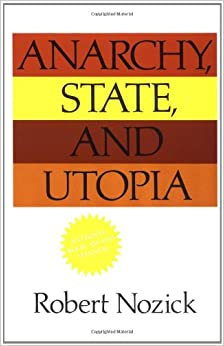

Monarchy, Democracy and Natural Order
Monarquia, Democràcia i Ordre Natural és el títol del llibre més conegut de l'economista i filòsof alemany Hans Herman Hoppe. Hoppe analitza i compara les dues formes de govern que s'esmenten al títol, però ho fa des de la perspectiva de la preferència temporal. No és el mateix, argumenta, un rei, que percep el país com a propietat seva i que la legitimitat del qual no és vista amb bons ulls (dret diví), que un president, que entén que és el cuidador temporal del país, i que es veu legitimat perquè ha estat escollit per una majoria.
Human Action
L'Acció Humana és una de les obres més importants de Mises. Aquest tractat d'economia, entre altres obres de la mateixa categoria, estableix les bases del pensament de l'Escola Austríaca d'Economia. Es posa l'accent en idees tals com la d'individualisme metodològic, en contraposició al col·lectivisme. Són individus, i només individus, els qui actuen, per tant, es rebutja la idea que existeixin entitats, per damunt de l'individu, que tinguin interessos propis i que, per tant, puguin actuar.
Anarchy, State, and Utopia
Anarquia, Estat, i Utopia, és una de les obres més conegudes dins del moviment lliberal-llibertari. Robert Nozick, el seu autor, discuteix sobre la moral de l'Estat, i teoritza sobre com, d'alguna manera, es pot fer compatible la preservació de drets naturals individuals, amb l'existència d'entitats monopolístiques de la violència i de la sobirania: els Estats. Posa de manifest l'ideal, segons ell, utòpic de l'anarquia, fent ús d'hipòtesis que intenten explicar com es desenvoluparien certes situacions al món, amb l'absència d'Estats.